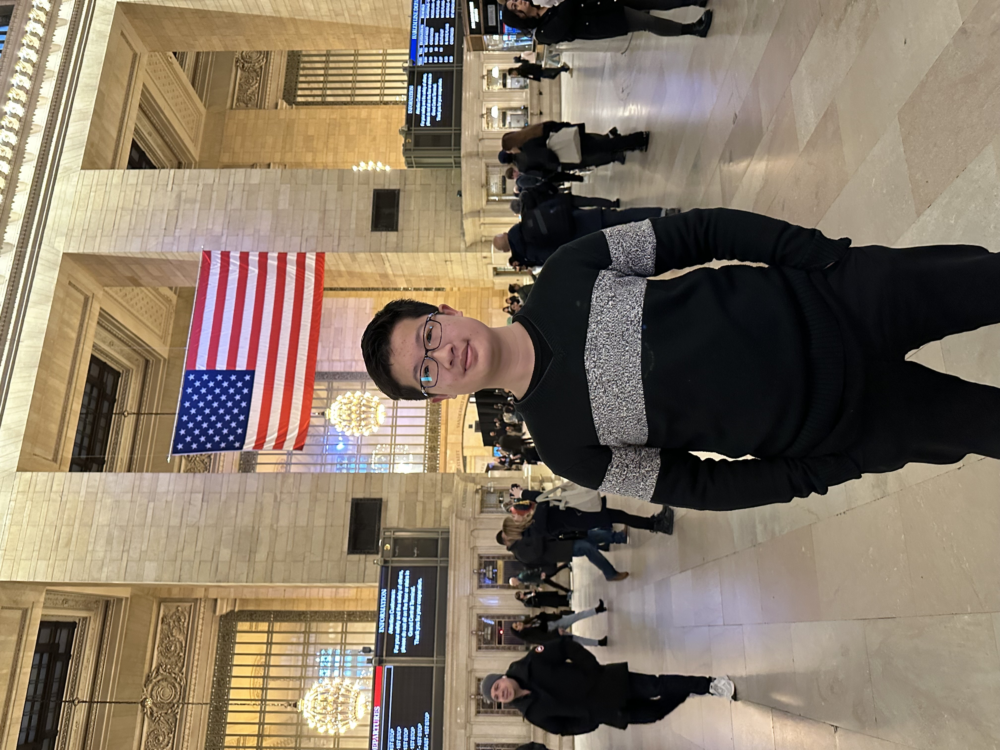
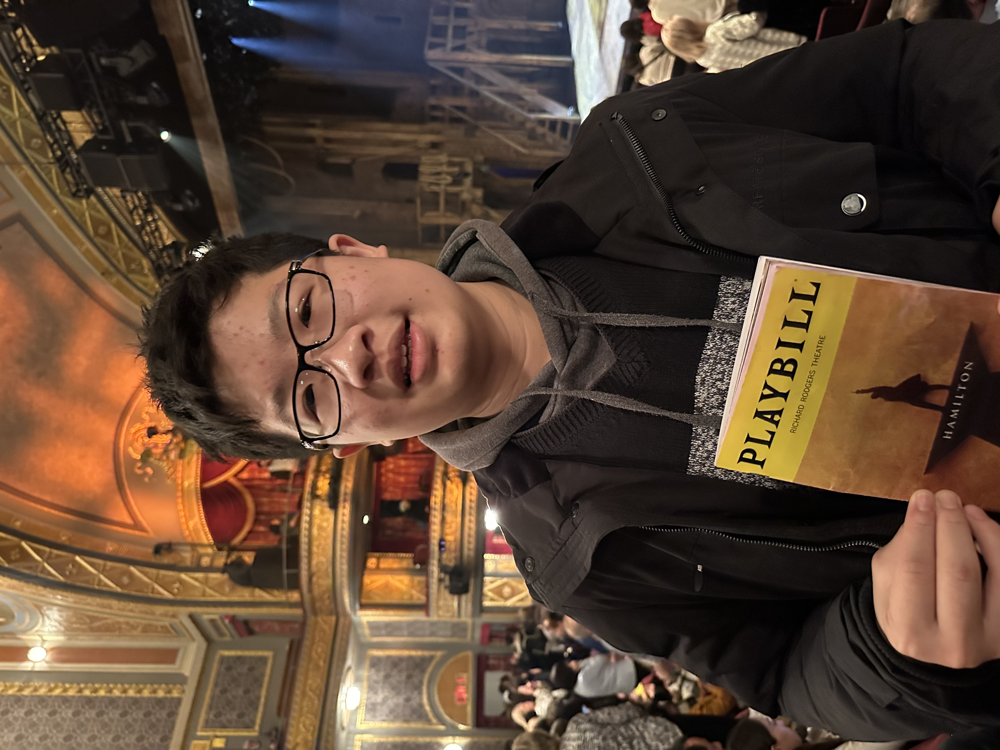
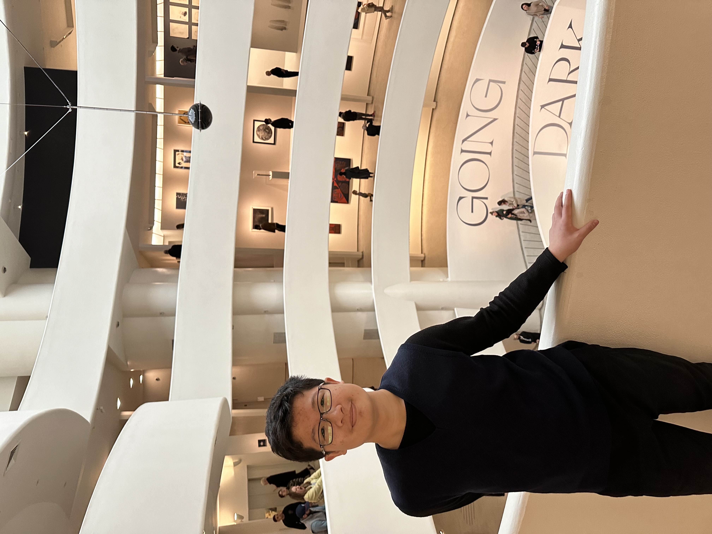

Hi! I'm Anthony.
I’m passionate for learning all kinds of new things, making friends of different backgrounds, and seeking intellectual challenges at all times.
I’m also interested in helping the world through engineering: For example, to address global environmental impacts and risks in order to achieve sustainability, I led a project team to design an automatic machine that encourages people to reduce and reuse plastic waste, and I was awarded “Future Talents” Prize Winner by the School Principal.
Another example was when our team trained a Siamese model that allows people to identify potential diseases from x-ray chest scannings, and through few-shot learning or zero-shot learning, it can also be transfer-learned to identify other diseases. Still another example was when our team trained a deep learning model to identify a pollutant in water, which won Country/Region/Territory Recognition for AI Projects in the Intel® AI Global Impact Festival 2023. Yet another example is when our team created an AI algorithm to transfer music to emotionally similar stories so deaf people could experience music, which won fourth prize in the 2024 Taiwan International Science Fair.
I aspire and stay determined and persistent. I persevere in pursuing STEM studies, C/C++/Python programming, deep learning and other algorithms, and Arduino micro-processors despite the academic rigor day to day school work involves.
I also enjoy exploring possibilities and actively participating in other extracurricular activities including: Boy Scouts, English Debate, Physics Debate(which our team won third place in), Public Speech Contest (which I won first place in), The Space School, Table Tennis Varsity Team, Clarinet Duet/ Chamber Music Concerts, Arts Productions.